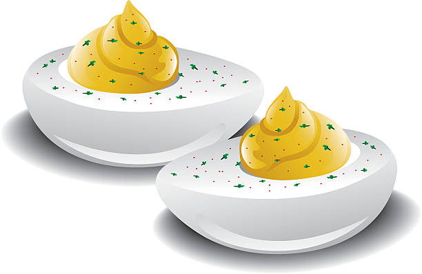

Hard-Steamed Eggs

Description
Look no further for a method to make hard-cooked eggs. Fresh or old, they are easy to peel. This works for 1 to 12 eggs.
Ingredients
- 12 eggs, at room temperature
Steps
- Place a steamer insert into a pot and fill with water to just below the bottom of the steamer. Bring water to just below a boil. Add eggs to steamer insert and steam for 15 minutes.
- Immediately transfer eggs to a bowl of ice water until cool enough to handle. Make a small crack on the large end of each egg and place eggs back into the ice water for about 20 minutes. Peel.